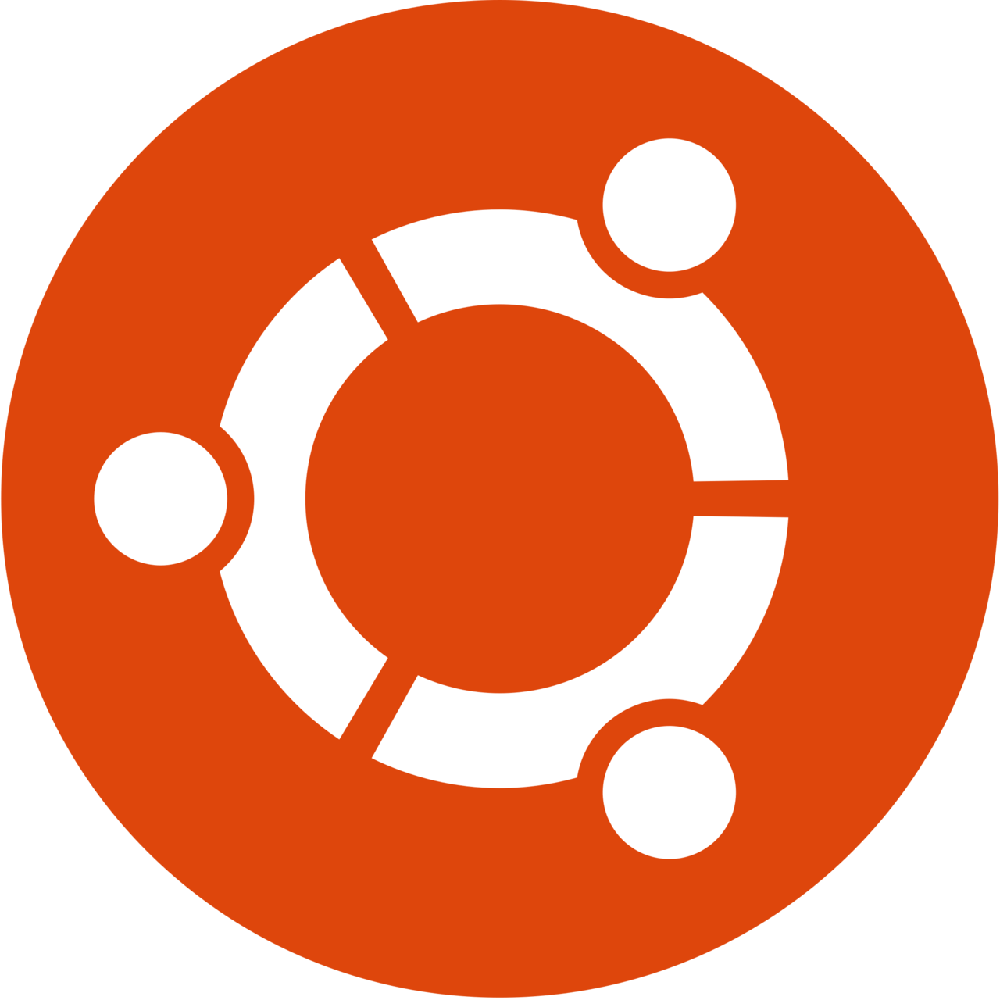

How to start with Linux
Are you confused by the hundreds of videos showcasing so many different "distros"? Everyone keeps telling you not to use this, don't use noob distros like Ubuntu or Linux Mint, use NixOS instead. Don't you dare use anything with X.org, Wayland. Wayland is actually super evil, use X.org. DOn't listen to them, use TempleOS, which uses neither.
In this article I will clear up any confusion you might have about Linux, which distribution to pick, and how to install software on your system.
Table of contents
- What even is Linux?
- Where do I start? There are hundreds of distros!
- The Linux distributions that actually matter
- Desktop environments (DEs for short)
- Software installation
- Display servers
What even is Linux?
That's obvious. Linux is Ubuntu, and the others. Or is it? Actually not really.
Linux itself is just the kernel, which is essentially a ton of drivers bundled together. It's a widely used kernel because it supports a lot of devices and peripherals. I dare say even more than the kernel of Windows in many cases.
Ubuntu, Mint, and the countless other distros the community has told you about are using Linux, but also bundle it with other software that actually makes up a functional operating system. Some people refer to these operating systems as GNU/Linux, but even GNU is just a small collection of software, which is not enough to make a functional OS. For simplicity's sake, we can just call the kernel Linux, and the operating systems Linux distros.
Where do I start? There are hundreds of distros!
Well yes, but actually no. Do you know the concept of software "forking"? This is when a developer modifies another project's code, and releases their own version.
This is in fact why there are so many distros. People took a well known Linux distro, and tweaked something they didn't like.
The Linux distributions that actually matter
Debian
Founded in 1993, Debian is sometimes called the grand daddy of all distros. It's not far from the truth. Ubuntu which you most certainly know of, is a fork of Debian. It's safe to say that this is the most forked Linux distro.
It is a stable distribution, meaning it releases a version that is maintained for several years. Just like Windows 7,8,10,11,...
Personally I think this is what everyone should use, as this release model ensures that every time you turn on your computer, you can be sure it will work.
Debian releases approximately every 2 years, and every release is supported for 5 years.
Ubuntu
Ubuntu also releases every 2 years, but each release is supported for 10 years. So you can install the latest version available today, and not upgrade to a new version for a decade without a problem.
Don't get confused by the "Pro". It's free for everyone if you sign up with your email. Ubuntu also releases a new version every 6 months for those who need the absolute latest software, but you don't have to use those and just stick to your LTS.
There is a lot of hate floating around this distribution, but I can assure you, it's unwarranted and you will have a good time while using it. The desktop experience is great, every app supports it, and if you encounter any issue with it, there is a good chance someone else did too.
You can also choose among the many spins, which differ by the desktop environment they are using, if you don't like the default GNOME.
Linux Mint
This is an active fork of Ubuntu. The main difference between Mint and Ubuntu are that Mint resembles the classic Windows design by default. Ideal for beginners who don't want to get used to a new layout. It also comes preloaded with a lot of useful tools.
And lastly, Mint favours Flatpak instead of Snap. I will return to this in a later section of this article.
 RedHat Enterprise Linux
RedHat Enterprise Linux
Also founded in 1993, Redhat is one of the oldest Linux companies to exist. They provide secure solutions to businesses, but their operating system, RedHat Enterprise Linux (RHEL for short), is free if you register a developer account. You can expect a new release every 3 years, while every release is supported for around 10 years.
While this distro is not aimed at home users, there's nothing stopping you from using it. If you don't mind the older selection of packages, most notably the Desktop Environment and the kernel, you might enjoy your time with it, as RHEL has proven itself to be one of the most stable distributions out there.
In case you don't feel comfortable with creating a RedHat developer account, there are RHEL clones, which are just a rebranded RHEL distributed for free. The most famous ones are Rocky Linux and Alma Linux.
 Fedora
Fedora
RHEL is actually using Fedora Linux as its foundation, which is much more user friendly, and it's something you might want to consider using. In essence, Fedora tests new updates and Redhat introduces them at a later date, after they've been thoroughly tested.
However this doesn't mean your experience will be attrocious. Quite the opposite. Fedora is also a stable distribution, just like RHEL or Debian, and they release a new version every half a year. From my experience, and what people have told me, Fedora is very stable and suitable for anyone.
You can also choose among the many spins, which differ by the desktop environment they are using.
SUSE
Founded in 1994, this German company focuses on enterprise solutions, just like RedHat. While you can't use SUSE Linux as an individual without paying, SUSE uses OpenSUSE as their testing ground. OpenSUSE distros are of course free of charge.
OpenSUSE Tumbleweed
This is a so called rolling release distribution. Unlike any of the distros mentioned previously, Tumbleweed has no versions. The system you download is being updated as you go. In pure theory, you could use this forever without upgrading, but rolling release distributions come with a few caveats. One of them being less reliability.
One day you will update your system, and the next day you will be met with a black screen. Or something you need will not work. Tumbleweed minimizes the risk of this thanks to rollbacks, handled by its file system. But if your main focus is stability, and you just want to work on your machine, rolling release distributions are not for you.
To be fair, Tumbleweed has an advantage in the form of having the latest packages, so you don't have to use flatpak/snap if you don't want to. If you don't mind rollbacking once in a while and troubleshooting your system, you might have fun with this.
Also it has one of the best installers I have ever used. You download the default ISO, and the installer lets you pick whichever DE you want, as well as the specific package selection.
OpenSUSE Leap
As the name suggests, in this version of OpenSUSE you leap from one version to another. The current version is 15.6, the next one will be 15.7 and so on.

I have little experience with this distro, but it contains the same installer as Tumbleweed, and I heard from people that it's very stable.
Desktop environments (DEs for short)
DEs are the graphical part of every distro. It's what you interact with, and every screenshot from a distro you've seen so far used one of these mentioned desktop environments. There are many DEs out there, but only few that really matter. Whichever one you like is up to you, and there is generally no bad DE as long as you feel comfortable while using it.
No matter which distro you pick, you can always swap its DE. So don't feel pressured into choosing the best one.
In most cases all it takes to swap a DE is typing package-manager install desktop-environment-name and you're done.
GNOME
This is the default for the vast majority of distros. It is used as a default DE by Ubuntu, RHEL, OpenSUSE. In a way it resembles MacOS, but its main focus is simplicity.
For my usecase it's more than enough. I always install a clipboard history extension and I'm good to go. I like gnome because it's mostly bug-free and I simply love its design.
If you find a missing feature, you can usually find it in a form of an extension. For example GNOME lacks a clipboard manager that would allow you to store multiple copied strings, but it can easily be installed from Gnome Extensions by pressing the install button.
KDE Plasma
Now if you need a fully featured desktop, with all of the features you are used to from Windows and much more, this is the DE for you. By default KDE resembles Windows but its rich editor makes it possible to theme it to look like anything, and move the panels around.
{kind=link}
Cinnamon
A fork of an older version of GNOME, created and used by Linux Mint. It resembles Windows, is slightly less customizable than Plasma, but you might prefer it simply because of its looks. Or any other reason. It truly doesn't matter which one of these do you pick. You can always swap them with a single command.
Software installation
Now comes the not so fun part about Linux. Actually installing software that you will use. Compared to Windows or MacOS, there are multiple ways of installing software. The good news is that you can use all of them at once, without breaking anything.
Distribution native package managers
This method is very straightforward. You open an appstore, search for an app, and hit install. The store will reach out to your distribution's repositories, and install the app. Every distro manages their own repositories, so software availability warries. What you can easily install this way on Ubuntu might not be installable on SUSE, and so on.
You can also not use the graphical app store, and instead open the terminal and type [package_manager] install [app]
Example:
This is specifically Debian's package manager, APT. But if you choose Fedora or SUSE, all that changes is the name of the package manager.
In case of Fedora it would be dnf install app, in case of SUSE zypper install app.
If you don't want to, you don't have to bother with the terminal at all. Graphical appstores ship with every distro. This method is however very fast.
.DEB/.RPM
In addition to installing software from a repository, you can also download files with these extensions, double click and install them. Just like a .exe on Windows. (In case of Ubuntu 24.04 you should install gdebi for the double clicking to work. Canonical did an oopsie.)
- .DEB is for Debian systems, including Ubuntu and Mint.
- .RPM is for RedHat systems like Fedora, but also for SUSE.
Flatpak
This is a containerized method of installing software, primarly developed by RedHat. What does containerized mean?
Notice how APT also installs several other packages. These are called dependepcies, and mpv cannot function without them. What Flatpak does is bundle everything into one container. So when you install the flatpak of mpv, it's a single package.
The advantage of this solution is that it works on every distro, and you can be sure it will behave the same way everywhere. It also makes the job of developers easier.
How to use flatpak? Well, some gprahical software stores integrate it, some don't. The Appstore that ships with Ubuntu only supports Snaps and APT packages, so you would have to use the terminal.
It's rather simple tho. You open up Flathub, search for the app you want to install, copy the installation command, and paste it into your terminal.
Done. You can also integrate flatpak into your graphical app store if you want.
sudo apt install gnome-software-plugin-flatpak gnome-software
Flatpak also restricts the app's permissions, like on Android. A flatpak won't have access anywhere it shouldn't. You can manage its permission by using Flatseal.
 Snap
Snap
Just like Flatpak, Snaps are also containerized, but developed by Canonical, the company behind Ubuntu. In many ways it's the same as flatpak, but I found that it handles terminal software better. You can for example install yt-dlp (a terminal youtube download tool) as a snap, and use it as you normally would.
The installation syntax is easier, as you don't have to specify the exact name of the package (snap install mpv will do), and it comes bundled with Ubuntu and their graphical app store.
Snaps are also forbidden from accessing anything they shouldn't on your system, just like Flatpak. I however don't know of a way to manager their permissions.
AppImage
Yet another containerized solution (Although as far as I know it's not inherently more secure. It is bundled with every dependency the app needs, but it can access your file system).
This time you download Name.AppImage files which you mark as executable and then run.
A big disadvantage of AppImages is the fact that integrating them into your system is hard. Let me explain. When you install an app via your package manager, .deb, .rpm, snap and flatpak, you can launch them like you would normally launch an app. You can also pin the app to your taskbar, etc. AppImages need to be launched by opening the folder they are placed in, and double clicking on them.
The only way to truly integrate them is to create a .desktop file and placing it to /usr/share/applications. But this doesn't always work. So yeah. With AppImages you will have to always visit the folder you placed them in, and double click one to launch it.
Display servers
Remember when I said that Linux distros are a collection of software, and Linux alone is not enough to make a functional operating system? A display server is the component that handles displaying content on your screen.
X.org
This is an old standard that's slowly being replaced.
Wayland
This is the replacement. Most distros use it by default, but in case it gives you trouble on your hardware, you can switch to X.org while logging in and pressing the gear icon.